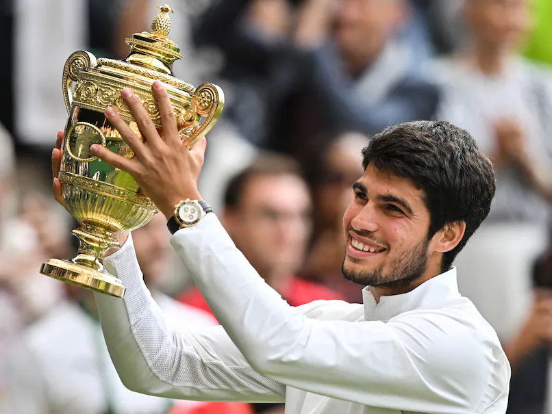
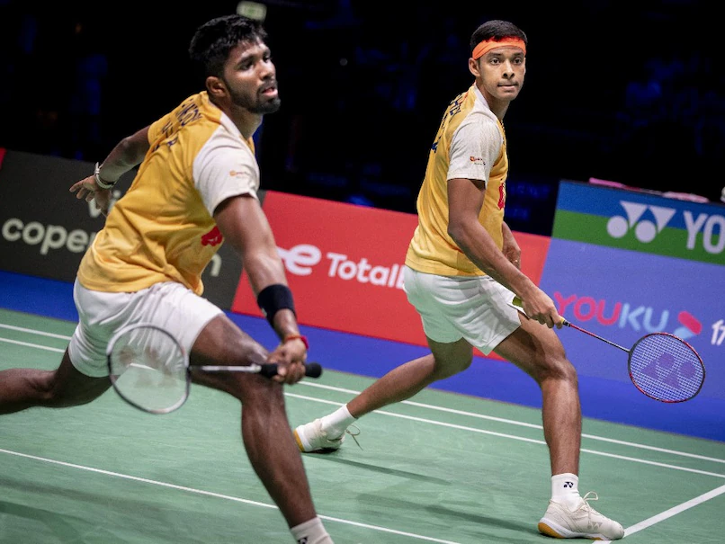

IND v NED, World Cup 2023: Invincible India hammer Netherlands by 160 runs in cracking Diwali show

Robert Lewandowski leads Barcelona comeback against Alaves; Atletico win record 15th game in a row at home
.webp)
"Hope It Comes Soon For Us," Says Sunil Chhetri On India Reaching FIFA World Cup

Archery: Dhiraj blocks out negatives, locks in Paris Olympic quota

Novak Djokovic secures year-end No. 1 ranking for record-extending 8th time by beating Holger Rune at ATP Finals
Watch: Afghanistan Star Helps Needy People On Ahmedabad Street At 3 AM
In a heart-warming gesture, Afghanistan's opening batter Rahmanullah Gurbaz was spotted helping the needy people on the side of the street in Ahmedabad at 3 am. In a heart-warming gesture, Afghanistan's opening batter Rahmanullah Gurbaz was spotted helping the needy people on the side of the street in Ahmedabad at 3 am. The video of Gurbaz went viral on social media with Kolkata Knight Riders (KKR) -- the team he plays for in the Indian Premier League -- also sharing the clip. The Afghanistan star could be seen giving money to the needy people, who were sleeping on the side of the street. "From working tirelessly to raise money for the victims of the Herat Earthquake in Afghanistan earlier this month, to this act of kindness in a foreign land - you inspire us all. God bless you, jaani," wrote KKR while sharing the video.
World Cup Semi-Finals Full Schedule:
Teams, Matches, Venues And More
The two semi-finals of Cricket World Cup 2023 will be held on November 15 and 16 in Mumbai and Kolkata respectively. Semi-final 1: India will take on New Zealand in the first fixture of the knockouts at the Wankhede Stadium in Mumbai. The two teams had famously squared-off in the semi-final of the 2019 World Cup too where the match spanned over two days due to rain. India were beaten by the Kiwis in the match. Rohit Sharma's men will be keen to not let the history repeat itself this time. India vs New Zealand, semi-final 1: November 15, Wednesday, 2:00 PM IST at Wankhede Stadium in Mumbai. Listen to the latest songs, only on JioSaavn.com Semi-final 2:Australia and South Africa will square off in the second semi-final of the World Cup 2023. Australia, 5-time champions, lost their opening two league stage matches before winning seven on the bounce to seal the third spot in the points table. South Africa, on the other hand, also won 7 of their 9 league matches, including a victory over the Kangaroos. The Proteas might have a morale advantage, having already beaten Pat Cummins' men but history favours the latter. It would be interesting to see if South Africa can overcome the Australian challenge once again to book their spot in an ODI World Cup final for the first time ever. Australia vs South Africa, semi-final 2:November 16, Thursday, 2:00 PM IST at the Eden Gardens, Kolkata
'Carlos Alcaraz' The 'Spanish Bull' Who Ended Novak Djokovic's Rampant Wimbledon
Carlos Alcaraz ended Novak Djokovic's unbeaten 34-match run at the All England's club, clinching the Wimbledon 2023 title for the first time in his career.
Max Verstappen Wins Again As Fernando Alonso Snatches Third On Line
Max Verstappen secured his 17th win in a record-breaking season on Sunday, resisting early pressure from Lando Norris to triumph in an accident and incident-hit Sao Paulo Grand Prix.
We are stronger and more prepared for 2026 World Cup qualifi:Sunil Chhetri
Sunil Chhetri :"strong" and "more prepared" than previous occasions to make it to the next round of the FIFA World Cup 2026 qualifiers as the players have had good game time under their this year.
Satwiksairaj Rankireddy-Chirag Shetty Lose In First Round Of Japan Masters
Satwiksairaj Rankireddy and Chirag Shetty faltered in the opening round to make a shocking exit from the Japan Masters Super 500 badminton tournament.
News of The Day
Vidit Gujrathi interview: “There were moments I thought ‘is my career done? Am I history’?”

About a month back, around the Asian Games, Vidit Gujrathi decided to take stock of his career. In particular, he was trying to remember when he had last won a tournament Finally, he found it: his title at the Biel Chess Festival, which had come four years ago in 2019.
Virat Kohli slams historic 50th ODI ton in IND vs NZ World Cup semi-final, shatters Sachin's twin world records

Ending his semi-final curse at the grandest stage on Wednesday, run machine Virat Kohli played a masterful knock against Kane Williamson's New Zealand to surpass his idol Sachin Tendulkar at the famous Wankhede Stadium. Continuing his sublime run in the 2023 World Cup, Kohli shattered Tendulkar’s triple records in a single innings during the first semi-final of the ICC tournament.
Man Utd, Denmark suffer Hojlund, Eriksen injury blow

Ending his semi-final curse at the grandest stage on Wednesday, run machine Virat Kohli played a masterful knock against Kane Manchester United could be without Rasmus Hojlund for a critical Champions League trip to Galatasaray, while Christian Eriksen will be sidelined for a month in the latest injury blow to the Red Devils. Despite Hojlund's five goals in four Champions League appearances for the club, United are on the brink of elimination ahead of their visit to Istanbul on November 29.
Watch Virat Kohli bows down to Sachin Tendulkar after breaking legend's ODI centuries recird
In a stunning and heart-warming gesture, batting great Virat Kohli bowed down to legendary Sachin Tendulkar after breaking his record of most centuries in one-day international format. As Kohli notched up a historic record-breaking 50th ODI ton against New Zealand in the World Cup semi-final in Mumbai on Wednesday, the 35-year-old celebrated with a fist pump, flying high in the air.